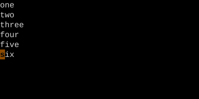

Counts
Type a number before any motion or operator. It multiplies.
Most Vim commands accept a count prefix. 5j moves down 5 lines. 3dw deletes 3 words. Counts on both sides of an operator multiply.
Almost every Vim command accepts a numeric prefix. The number means "do this N times." That's it — no escape sequence, no special key. Just type the digits, then the command.
| Key | Note |
|---|---|
| 5 | |
| j |
| Key | Note |
|---|---|
| 1 | |
| 0 | |
| x |
| Key | Note |
|---|---|
| 3 | |
| d | |
| w |
Reference
| Pattern | Means |
|---|---|
| {n}{motion} | Apply motion n times |
| {n}{op}{motion} | Apply (op + motion) n times |
| {op}{n}{motion} | Apply op once over (motion × n) |
| {n}{op}{m}{motion} | Apply op (n × m) times over motion |
| {n}. | Repeat last change with new count n |
Worked example — 5j and 3dw
Counts multiply motions and operators.


Counts apply equally to motions and to operator+motion combos. 3dw == d3w == ddwdwdw.
See also: The Universal Grammar, Delete, Dot with Counts